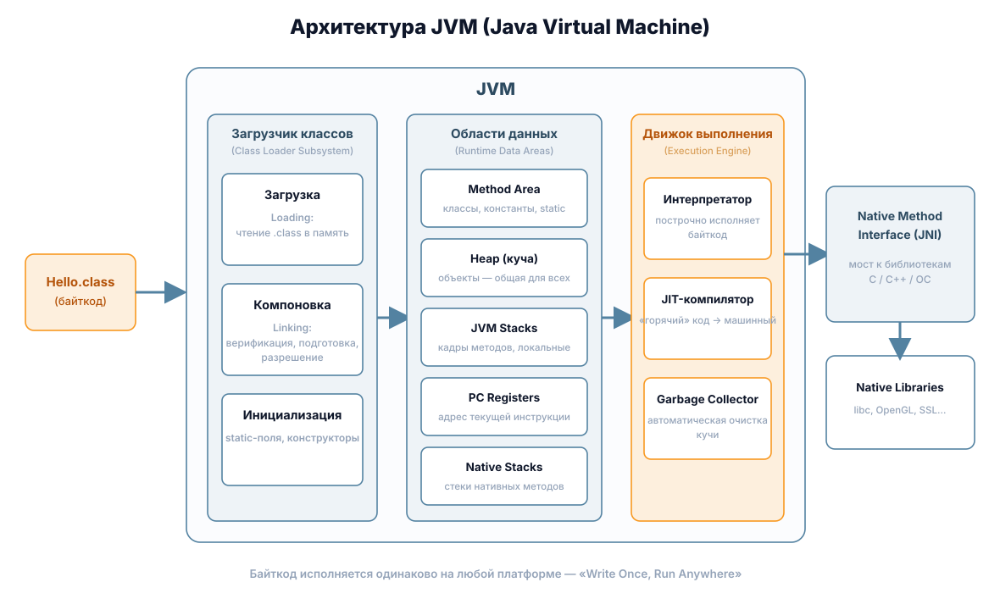

Документация Java 21
Справочник по языку Java
Компактная документация по Java и JDK 21 (LTS): от установки до виртуальных потоков. Все примеры кода с подсветкой синтаксиса, кнопкой копирования и поиском по сайту.
Что такое Java
Java — язык программирования общего назначения, созданный Джеймсом Гослингом в компании Sun Microsystems (первый релиз — 1995 год, с 2010 года развивается Oracle). Главная идея языка — *написал один раз, запускай где угодно* (Write Once, Run Anywhere): исходный код компилируется в байткод, который исполняет JVM (Java Virtual Machine) на любой платформе.
Компилятор и среда разработки поставляются в составе JDK (Java Development Kit). Этот справочник описывает JDK 21 — долгосрочную (LTS) версию, выпущенную 19 сентября 2023 года.
Из чего состоит платформа Java
| Компонент | Что это | Аналогия |
|---|---|---|
| JDK (Java Development Kit) | Комплект разработчика: компилятор javac, интерпретатор java, REPL jshell, архиватор jar, документатор javadoc и др. | Мастерская со всеми инструментами |
| JRE (Java Runtime Environment) | Среда выполнения: JVM + стандартная библиотека классов. Нужна только для запуска программ | Станок с электропитанием |
| JVM (Java Virtual Machine) | Виртуальная машина, исполняющая байткод: загрузчик классов, области памяти, движок выполнения (интерпретатор + JIT), сборщик мусора | Двигатель внутри станка |

Как устроен этот справочник
Видеообзор
Ключевые возможности JDK 21
- Виртуальные потоки (JEP 444) — лёгкие потоки, которых можно создавать миллионы; переворот в серверной разработке.
- Паттерны записей (JEP 440) — деконструкция
recordпрямо вinstanceofиswitch. - Сопоставление с образцом для switch (JEP 441) —
switchпо типу с защитными условиямиwhen. - Последовательные коллекции (JEP 431) — единые интерфейсы
SequencedCollection,getFirst()/getLast()/reversed(). - Поколенческий ZGC (JEP 439) — сборщик мусора с паузами менее миллисекунды стал ещё эффективнее.
Подробнее — в разделе «Что нового в JDK 21».